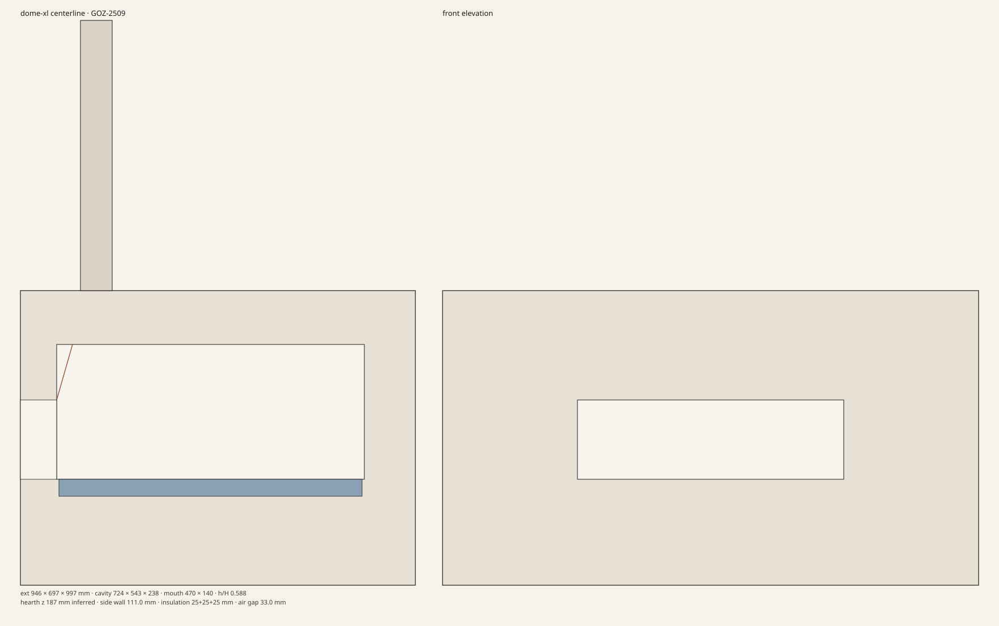
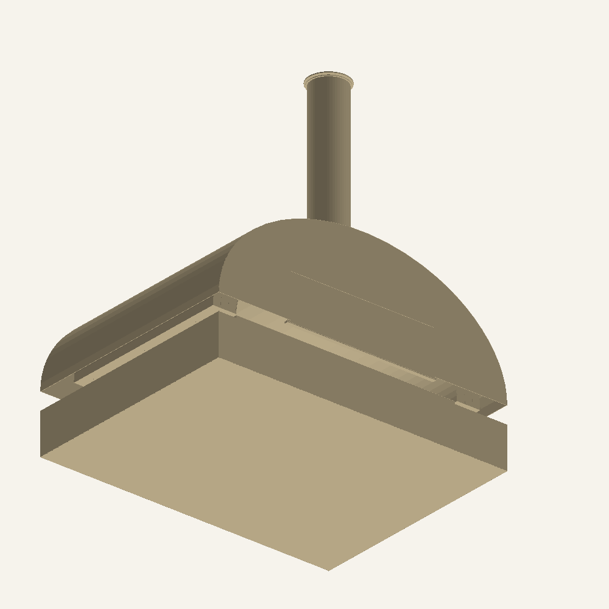
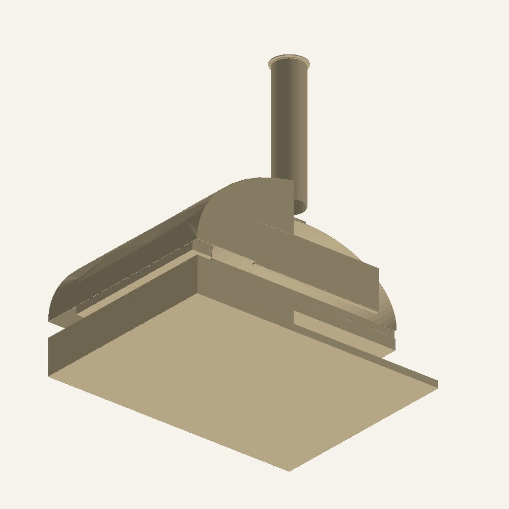
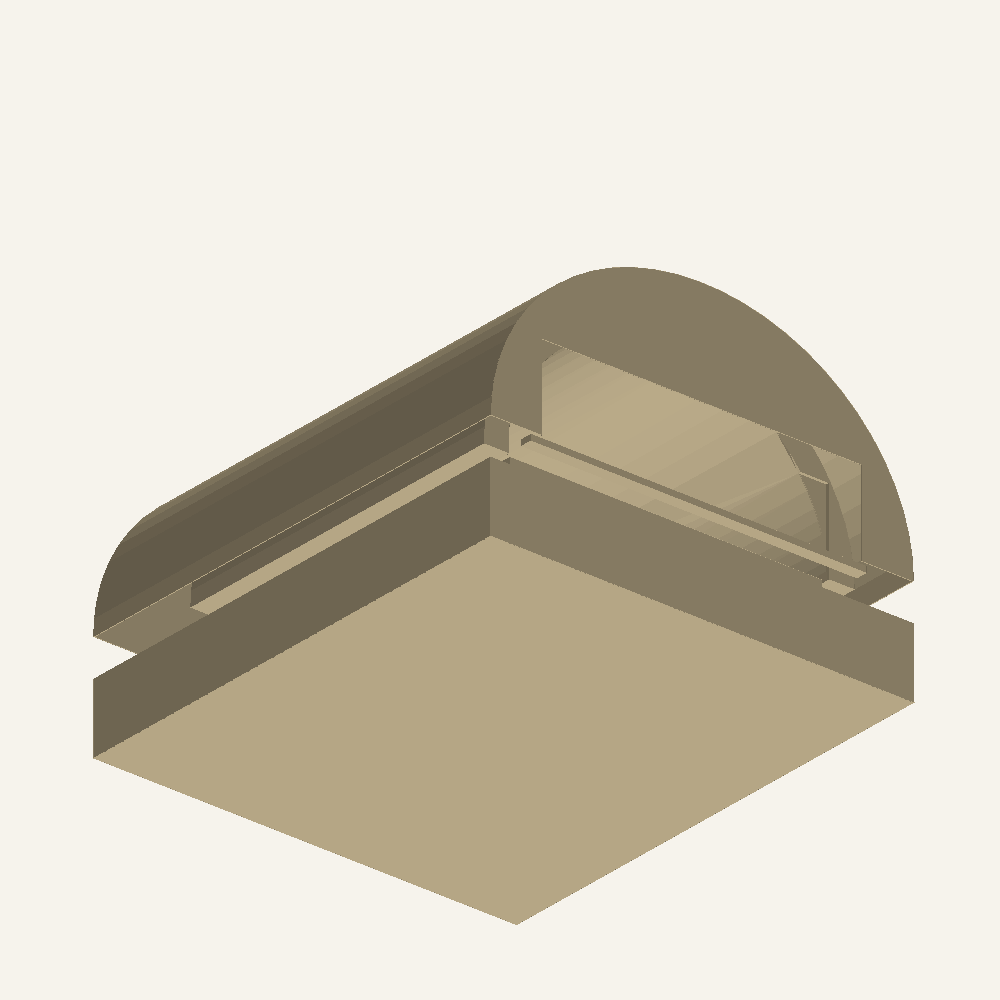
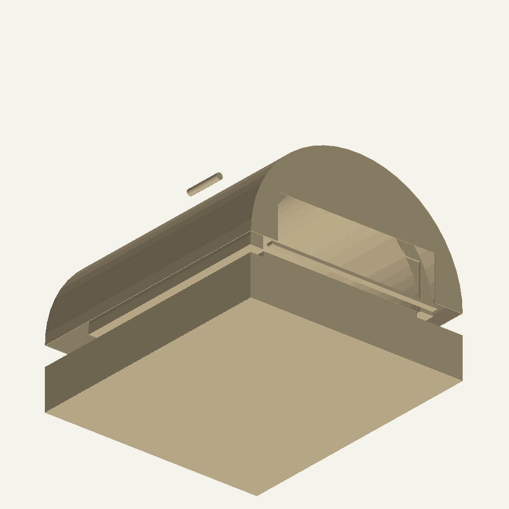

18 October 2026. Documentation is CC-BY-4.0. The parametric solids are CERN-OHL-P v2.
This is a reconstruction from published envelopes, manuals, and spec sheets. It is not a measured teardown and it is not a copy of Gozney drawings. Every number below is tagged Published, Inferred, or Modelled. Gauges, blanket thicknesses, skin temperatures, and Adelaide prices that are not on a plate are estimates.
The four long analyses were written by gemini-4-argon with thinking level HIGH. The agent checked the arithmetic, built the solids, and kept the solids on one stack. No Argon call failed, so nothing in the engineering argument was filled in by falling back to the coordinator.
| Job | Model | Thinking | Thought tokens | Output tokens | Time |
|---|---|---|---|---|---|
| Geometry | gemini-4-argon | HIGH | 8396 | 7859 | 198 s |
| Why the three ovens differ | gemini-4-argon | HIGH | 6582 | 17736 | 285 s |
| Materials and the hardwood shell | gemini-4-argon | HIGH | 9079 | 17409 | 333 s |
| Build plan, costs, risk | gemini-4-argon | HIGH | 5779 | 15100 | 243 s |
Worker text is in research/argon-anatomy/argon/. The agent owns cad/reconstructed/, the section drawings, the STL renders, the hardwood script, and this report. Where a worker's prose and the script disagree, the script is the number quoted here.
Retail prices are the au.gozney.com figures recorded in prompts/facts.md on 18 October 2026.
| Arc Lite GOZ-3102 | Tread GOZ-1893 | Dome XL Gen 2 GOZ-2509 | |
|---|---|---|---|
| External W×D×H | 430 × 481 × 297 | 418 × 484 × 320 | 946 × 697 × 997 including flue |
| Internal W×D×H | 325 × 355 × 150 | 310 × 380 × 150 | 724 × 543 × 238 |
| Mouth | 325 × 85 | 310 × 85 | 470 × 140 |
| Stone | 12 mm cordierite | 12 mm cordierite | 30 mm cordierite |
| Insulation | 1-layer AES, water-soluble | 1-layer AES, calcium-magnesium silicate | 3-layer AES |
| Mass | 12.0 kg | 13.5 kg (stand must hold 14 kg) | 73.0 kg (packed 80.8 kg) |
| Fuel | Propane, 3.4 kW, 252 g/h | LPG, 3.7 kW, 273.8 g/h | 10.6 kW, 784 g/h; hardwood or charcoal, never with gas |
| Flue / door | None / none | None / none | Removable flue, 3 mm rain gap / door after the flame is gone |
| AU retail | AUD 649 | AUD 899 | AUD 3999 |
Carton for Dome XL is 1077 × 815 × 613 mm, so the body without the flue is shorter than 613 mm.
Mouth / apex is 85/150 = 0.567 on Arc Lite and Tread, and 140/238 = 0.588 on Dome XL. The Neapolitan 0.63 ratio is a heuristic, not a Gozney specification. All three sit a little under it, which holds a hot layer above the lintel: 65 mm on the small ovens, 98 mm on Dome XL.
Mouth / width is 1.00 on Arc Lite and Tread and 470/724 = 0.649 on Dome XL. A 12-inch pizza fills the small hearths, so there is no cheek for a wood bed and no flue to make stack draft. Dome XL's cheeks are the point: gas stays on the left, wood is pushed to the right over the duct grate, and the cheeks keep the ember bed out of the mouth wind. The manual forbids gas and wood together, and forbids lighting wood with the gas burner.
Side wall is (external − internal) / 2: 52.5 mm, 54 mm, and 111 mm. One AES layer fits the portable ovens. Three layers fit the Dome because it is a 73 kg stationary oven with a 10.6 kW burner and a wood fire, not because the cavity is a different shape of flame roll. The flame roll itself is the same idea: a lateral burner at hearth level throws a flame up the left wall and across the crown.
Arc Lite is the cheap tabletop: no thermometer, no door, no wood, die-cast aluminium and stainless, 12 kg. Tread spends the extra mass and height on a crash base, a 304 mid-wrap, an HPDC landing, roof-rack handles, and an analog stone thermometer, and it asks for 50 mm of air around the dock. Dome XL spends mass on a 30 mm segmented floor, three insulation layers, a flue, a door, and probes.
Clearance on the published plates: 0.3 m sides and back, 1 m in front, outdoor only. Minimum bottle called out for Arc Lite is 5 kg. Dome XL at 784 g/h will ice a single small bottle on a cold Adelaide night; that is an operating limit, not a licence to build a bigger jet.
Axis: X across the mouth, centred; Y from the front face toward the back; Z up from the underside.
| Inferred field | Arc Lite | Tread | Dome XL |
|---|---|---|---|
| Body height | 297 (published) | 320 (published) | 520 |
| Hearth z (top of stone) | 107 | 115 | 187 |
| Crown space | 40 | 55 | 95 |
| Liner / outer sheet | 1.0 / 1.0 | 1.0 / 1.0 | 1.5 / 1.5 |
| Blanket layers | 25 | 25 | 25 + 25 + 25 |
| Front + rear walls | 40 + 86 | 35 + 69 | 64 + 90 |
| Flue rise | — | — | 997 − 520 = 477 |
Dome body height is the geometry worker's inference: 613 − 520 = 93 mm of packing, and 520 − 238 = 282 mm of floor plus roof. The materials worker's looser band was 550–580 mm. The solids use 520 because it is the only figure with a stated packing allowance. Hearth z = 187 leaves a 95 mm crown, which is enough for three 25 mm blankets plus the skins (blanket stack grows 76.5 mm from the liner). The 219 mm callout is not the hearth. Hypothesis that it is a skirt or landing height stays open; hypothesis that it is the vault or the flue is rejected (vault is published as 238 mm, and 997 − 219 = 778 mm cannot fit a 613 mm carton).
A one-piece 724 × 543 mm floor cannot pass a 470 mm mouth (mouth diagonal is 490 mm). The real floor is segmented. The solid models a single rectangle, inset 4 mm a side, so the mass model can be checked. It is not a cutting plan.
Densities used: liner 7900, skin 7850, insulation 128, underfloor 240, stone 2100, aluminium landing and handles 2700 kg/m³. Volumes are the solids after the mouth window is cut.
| Oven | Modelled kg | Published kg | Gap |
|---|---|---|---|
| Arc Lite | 10.79 | 12.0 | Valve, hose, igniter, die-cast landing |
| Tread | 11.23 | 13.5 | Same, plus thermometer and PPS clips |
| Dome XL | 70.15 | 73.0 | Gas train, probes, real segmented floor vs the rectangular stand-in |
The Dome stone stand-in is about 24 kg. That is the right order for a full-plan 30 mm cordierite slab (0.724 × 0.543 × 0.030 × 2100 ≈ 24.8 kg). Cutouts for the burner and the grate make the real set lighter.
STEP files are AP214. STL deflection is 0.35 mm linear and 0.25 rad angular. External envelopes match the published width, depth, and installed height within 1 mm (Dome height is the flue, 997 mm).
Adib's idea: a turned or coopered hardwood shell, with clay or insulation inside, so the outer cover is not a sheet-metal job. The limit used here is 80°C on the inner face of the wood. Char is not an acceptable design state. Mouth, flue, and landing stay non-combustible (304 or refractory). Species that make sense in Adelaide: red gum, sugar gum, blackwood, jarrah.
calcs/hardwood_shell.py is a 1D steady wall, 500°C gas to 20°C air, h_in = 25, h_ext = 10. The code is the number. An earlier prose draft said the ventilated wood sat at 45–55°C; that sentence is wrong.
| Case | Stack | Wood inner face | Verdict |
|---|---|---|---|
| A | 20 mm castable + 50 mm AES (k=0.08) + 25 mm calcium silicate (k=0.065) + 20 mm wood (k=0.16) | 103.9°C | Fail |
| B | Same, AES increased to 75 mm | 87.5°C | Fail |
| C | 75 mm AES + 50 mm calcium silicate + 20 mm wood | 74.4°C | Pass |
| Ventilated | Cavity air fixed at 30°C, h=8, then the wood | wood inner 26.4°C; calcium silicate outer face 79.5°C | Only if the slots actually move air |
Case C flux is about 242 W/m² and the wood outer face is about 44°C. If the vents choke, the wall returns to the sealed case and the wood climbs back through 80°C. Do not rely on a picture of slots.
Other shells, from the materials worker, all labelled ESTIMATE, AUD, Adelaide, 2026:
Buy the burner, the flame-failure valve, the thermocouple, the regulator, and the hose. Australian target is a certified LCC27 regulator at 2.75 kPa and an AS/NZS 1869 hose. Do not drill jets. Do not delete the flame-failure device.
AS/NZS 5601.1 is the installation standard (clearances, cylinders, outdoor use). AGA / SANZ approval to AS/NZS 5263 is appliance certification. A single backyard prototype on a portable bottle does not need that approval. Selling, hiring, or plumbing the oven to a fixed gas line does. South Australia's technical regulator treats an uncertified appliance on fixed pipework as an illegal installation.
No galvanised sheet, zinc-plated fasteners, or cadmium plating in the hot gas path.
The build worker's recommendation is a press-brake oven, not a copy of any of the three. Working name in that draft: Adelaide Folded-Vault 14.
ESTIMATE, AUD, Adelaide, 2026. Retail band AUD 620–940. Scavenged band AUD 220–400, and the hose and regulator in that band are still bought new. A 16-inch floor is a different oven: heavier stone, a 6.5–7.5 kW burner, and full sheets. The study bill is research/argon-anatomy/bom-study.csv. bom/bom.csv stays the empty project template until a design is chosen.
drawings/arc-lite-section.svg, tread-section.svg, dome-xl-section.svg.drawings/*.png. These are envelope renders. The section sheets carry the dimensions.figures/dome-xl/dome-xl.html (dark) and dome-xl-light.html. Hover the right half and the door shuts; the readout changes from "gas may run" to "gas off". That is the Dome XL rule, shown on one oven rather than as three product likenesses.models/*.step and models/*.stl, including a Dome cutaway and an exploded door.| Path | Role |
|---|---|
tools/argon/argon.py | Orchestrator. Default thinking level HIGH on gemini-4-argon. Cheap model has thinking off unless a job sets it. |
tools/argon/README.md | Mac setup. Python 3 only. Key stays in the environment. |
research/argon-anatomy/prompts/ | System, facts, and the four task briefs. |
research/argon-anatomy/argon/ | HIGH worker outputs and batch-summary.json. |
cad/reconstructed/ | Parametric spec, builder, exporter. |
research/argon-anatomy/calcs/hardwood_shell.py | The wood-shell temperatures above. |
Argon is stdlib. On a Mac: export GEMINI_API_KEY=... and python3 tools/argon/argon.py ping. No virtualenv.
CAD needs Python 3.11–3.14 and the pins in cad/requirements.txt (build123d==0.13.0, cadquery-ocp-novtk==8.0.1.1.0). On Apple Silicon, pip selects the macosx_11_0_arm64 wheel. Do not compile OpenCascade. This cloud image also needed python3-venv and python3-pip before python3 -m venv .venv could install those wheels. Pillow and numpy are used by the STL renderer and are not part of the CAD pin file.
python3 tools/argon/test_argon.py python3 -m cad.reconstructed.export_all PYTHONPATH=. python3 research/argon-anatomy/drawings/sections.py python3 research/argon-anatomy/drawings/render_stl.py node research/argon-anatomy/figures/dome-xl/build.mjs --light python3 research/argon-anatomy/calcs/hardwood_shell.py




